Directions to Berkeley Sacred Harp singing
The weekly Berkeley singing is meeting currently at Grace North Church, which is between Shattuck and Oxford on Cedar in Berkeley. The address is 2138 Cedar St. [Google Map] [Yahoo Map]. See San Francisco Bay Area Sacred Harp Groups for contact information.

Driving
The easiest way to get to Grace North Church is:
- Take I-80 (specifically, 580) towards Berkeley.
- Exit at University Avenue and drive into Berkeley all the way to the UC Campus.
- Take a left (north) at Shattuck.
- Take a right (east) at Cedar, which is at the fifth full intersection. Look for parking.
The church will be on the right (south) side of the street.
To Take BART
The walk from the Main Berkely Station to Grace North Church takes about 10 minutes.
- Get off at the Main Berkeley Station (the station after "Ashby",
and before "North Berkeley", coming from Oakland or San
Francisco).
- Turn right (north) as you exit at the street level. You'll be on Shattuck.
- Walk past University, keep going until you get to Cedar--this will be the sixth full intersection (University, Berkeley Way, Hearst Ave, Delaware, Virginia, Cedar).
- Turn right (east) at Cedar The church is on the left (south) side of the street, on the first block (before Oxford).